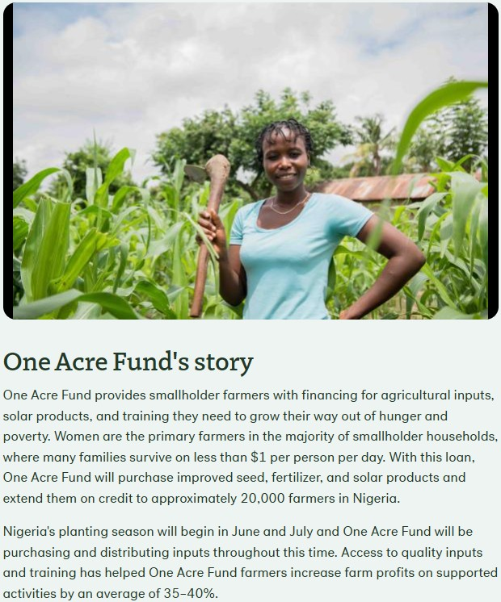
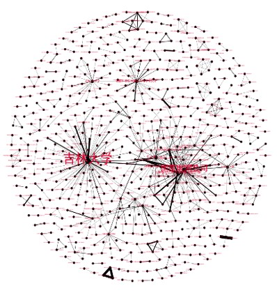
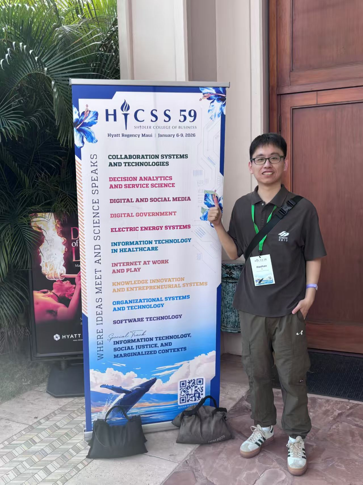
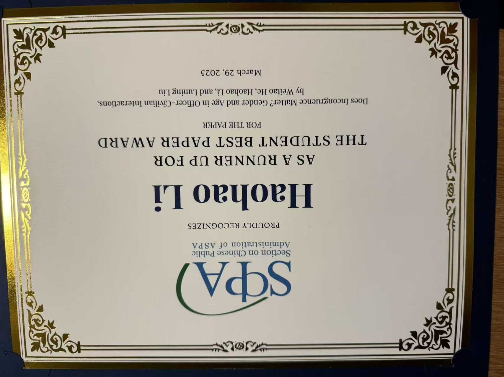
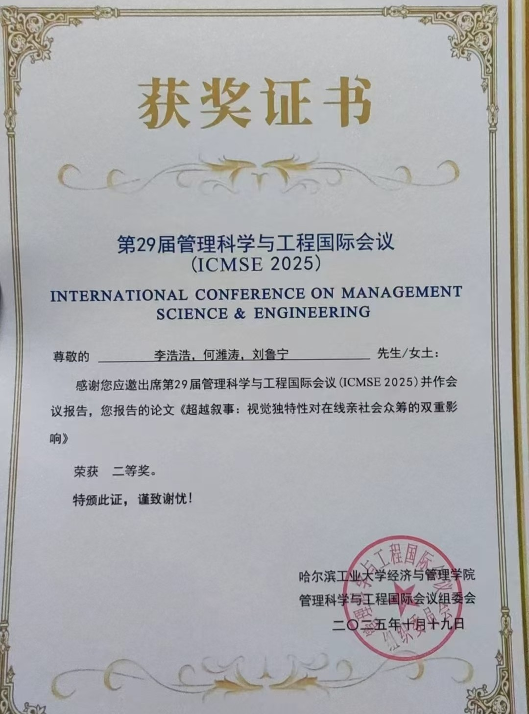
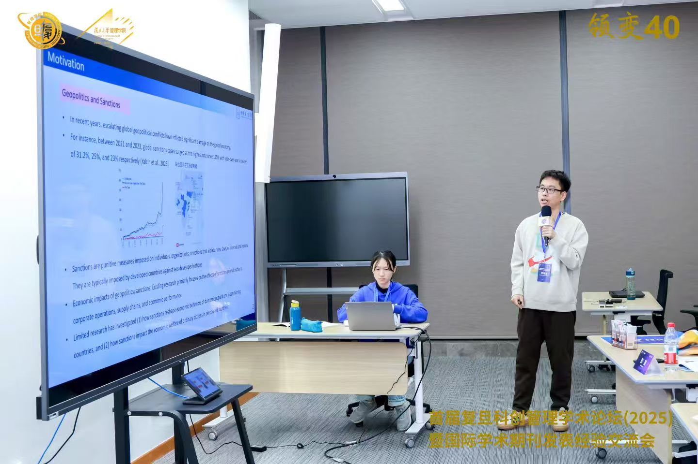
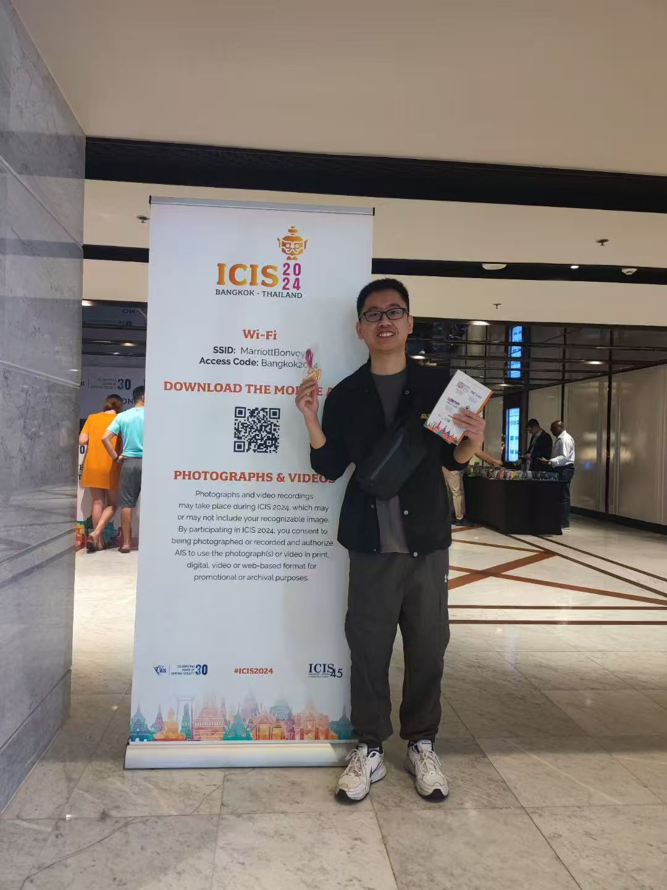
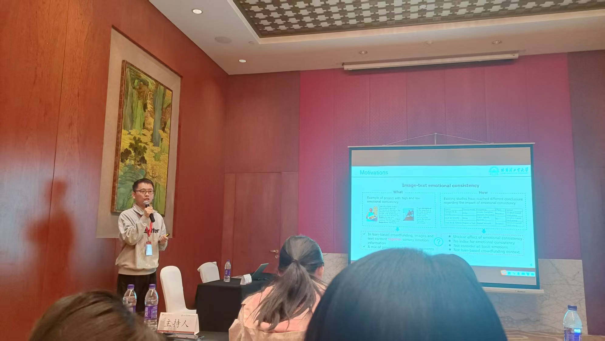

About Me
I am a Ph.D. candidate in Department of Management Science and Engineering at Harbin Institute of Technology (HIT), supervised by Prof. Yuqiang Feng（冯玉强）and co-supervised by Prof. Luning Liu（刘鲁宁）
My research interests include: (1) visual persuasion strategies and mechanisms on digital platforms; and (2) diversity, equity, and inclusion (DEI) in online lending/crowdfunding.
Methodologically, I employ a mixed-methods approach combining Econometrics, Machine Learning, Text Analysis, and Experiments to derive actionable empirical insights from complex digital platform data.
Relevant research findings have been published in SSCI-indexed journals such as Decision Support Systems and CSSCI-indexed journals such as 情报科学, and have also been accepted or included by leading domestic and international academic conferences, including ICIS(2024), HICSS(2026), PACIS(2025, 2026), CSWIM(2026), CNAIS(2024), CNIES(2024), ICMSE(2025), and WHICEB(2026).
Education
-
Ph.D. in Information Systems
Harbin Institute of Technology, 2022.03 - Present -
M.S. in Information Systems
Jilin University, 2018.09 - 2020.06 -
B.S. in Information Resources
Management
Jilin University, 2014.09 - 2018.06
Employment
-
软件开发工程师
珠海冠宇电池股份有限公司, 2020.07 - 2021.08
Publications
Journal Articles

Figure: Kiva Diagram
Unlike prior studies that examined visual or textual emotions in isolation, this study is among the first to propose and quantify the theoretical construct of "image-text emotional consistency," revealing its nonlinear mechanism in the context of prosocial crowdfunding.
不同于以往研究分别关注图像或文本中的情绪，本研究首次提出并量化了"图文情感一致性"这一理论构念，并在亲社会众筹的背景下揭示了其非线性作用机制。

图：合作网络演化图
本研究采用社会网络分析法，利用吉林省1985-2017年的专利数据，研究吉林省专利申请人合作网络的结构特征、重要节点和小团体，及它们的演化状况。研究发现：1985-2017年吉林省专利申请人网络呈现覆盖专利申请范围广，内部联系较低的特点。网络内占据重要位置的节点数量越来越多，演化过程显示从个人具有较高网络重要性，到以国家电网为代表的企业和以吉林大学为代表的高校具有较高影响力的转变。网络中小团体数量不断增多，小团体成员间的合作模式由亲缘型合作逐渐转变为以业缘型为主的合作模式。
Conference Papers

Figure: Conference Photos
Information overload and attention scarcity have become increasingly serious challenges in digital platforms. Drawing on the motivation-ability perspective, this study examines the relative effectiveness of different types of information strategies. The findings indicate that emotional and attractive information strategies are more effective in information-rich environments, while factual information strategies prove more effective in information-scarce environments.
数字平台中的信息过载和注意力稀缺问题愈发严重。本研究基于动机-能力视角，探究了不同类型的信息策略。研究发现：在信息丰富的环境下，情感和吸引力信息策略更有效；而在信息匮乏的环境下，事实信息策略更有效。

Figure: Conference Award Certificate
Using 8,822 judicial mediation cases, this study finds that gender incongruence reduces efficiency through a representational pathway (significant only for respondents), while age incongruence operates through cognitive diversity with role-differentiated effects. Female mediators attenuate the costs of gender incongruence, and older mediators amplify the benefits of age incongruence.
本研究分析了8,822件司法调解案例，发现性别不一致通过代表性路径降低调解效率（仅对被申请人显著），年龄不一致则通过认知多样性路径产生差异化影响。女性调解员可缓解性别不一致的效率损耗，年长调解员可放大年龄不一致的效率收益。

Figure: Conference Award Certificate
Drawing on the literature on narrative uniqueness — and investigates its dual effects on online prosocial crowdfunding. The findings show that pixel-level visual uniqueness exerts a U-shaped effect, while object-level visual uniqueness produces an inverted U-shaped effect. This study highlights the importance of the relative characteristics of image visuals and underscores the necessity of distinguishing between different levels of visual features.
借鉴叙事独特性文献，本研究提出了视觉独特性这一新的理论构念，并探讨了其对在线亲社会众筹的双重影响。研究发现，像素级视觉独特性具有U型影响，而对象级视觉独特性则产生倒U型影响。本研究强调了图像视觉的相对特征的重要性，也强调了区分不同层次视觉特征的必要性。

Figure: Conference Photos
在全球地缘政治紧张局势加剧的背景下，本研究探讨了地缘政治冲突对在线亲社会借贷的影响。研究发现，地缘政治冲突会显著降低跨国捐赠行为，且这种影响在不同群体中存在差异。本研究为理解地缘政治等宏观因素在数字平台上的作用提供了新的视角。

Figure: Conference Photos
This study introduces the concept of image-text thematic congruence and examines its effect on the funding speed of prosocial crowdfunding campaigns. The findings reveal that image-text thematic congruence has a significant negative effect on funding speed. This challenges the conventional assumption that image-text congruence positively influences audience responses and behaviors, offering new empirical evidence for research on multimodal communication effects in digital platforms.
本研究引入图像-文本主题一致性这一概念，探究其对亲社会众筹速度的影响。研究发现，图像-文本主题一致性对众筹速度具有显著的负向影响。这一发现挑战了"图文一致性正向影响受众反应与行为"的传统认知，为数字平台中图文多模态传播效果研究提供了新的经验证据。

Figure: Conference Photos
本研究提出了“图像-文本情绪一致性”这一理论构念，以及基于机器学习的量化方法。在亲社会众筹的背景下，本研究探讨了情绪一致性对在线亲社会众筹绩效的影响。研究发现，情绪一致性对在线亲社会众筹具有显著的倒U型影响。
Research Projects
- 国家社会科学基金重大项目：大数据赋能共建共治共享的社会治理制度建设研究（22ZDA100），2022-2024 （学生参与人、导师为项目主持人）
- 国家自然科学基金重点项目：大数据驱动的城乡基层社会服务体系构建与社区治理研究（72034001），2021-2025 （学生参与人、导师为项目主持人）
- 哈尔滨工业大学原创前沿探索基金项目：信用融资视角下县域农业供应链金融运作管理创新理论研究（72034001），2021-2025 （学生唯一参与人、导师为项目主持人）
Honors & Awards
- Best Paper Nominations, HICSS 2026
- Second Prize, Best Paper Award, ICMSE 2025
- Runner-up, Best Student Paper Award, CSPA 2025
- National Bronze Award, China International College Students' "Internet+" Innovation and Entrepreneurship Competition 2024
- 哈工大经济与管理学院博士生第一党支部书记，2024-2025
- Academic Achievement Scholarship for Graduate Students, 2018
- National Encouragement Scholarship, 2017
- National Encouragement Scholarship, 2015